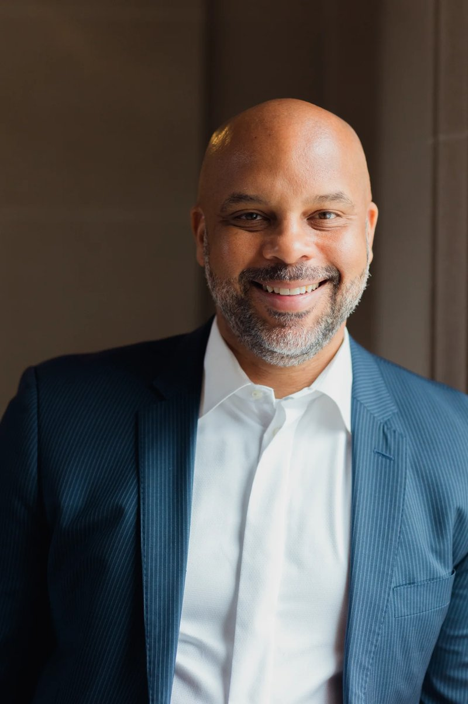

So I stopped waiting for permission and built the bridge myself. Every single time.
Kamyia Fletcher · Dedicated Educator · 1990–2019
This company is named after Kamyia Fletcher — my niece. A dedicated teacher who gave everything to her students. At 29, she passed away, having sacrificed so much of herself to a system that demanded more than it should have ever asked.
Kamyia's story isn't unique. Across every profession — teaching, healthcare, administration — brilliant people are burning out. Not because they lack passion or capability. Because the systems they serve demand so much of the routine that there's nothing left for the real work. The human work. The work that only they can do.
We're changing that. For her. For every professional who deserves better.

Dr. Ayinde Rudolph, Ed.D.
Founder & CEO, mYa Solutions
I spent 25 years in education. I was a teacher. A principal. A superintendent of Mountain View Whisman School District. I lived every problem I'm now solving — not as an observer, but as the person responsible for solving it at scale.
I watched teachers drown in paperwork when they should have been connecting with students. I saw brilliant educators leave the profession — not because they stopped caring, but because the system made it impossible to care and survive. 44% of teachers leave within five years. That's not a retention problem. That's a system failure.
So I built the bridge.
I've been coding since GW-BASIC in high school. I was recognized by President Obama and Secretary Duncan — the only non-superintendent honored — for my approach to Digital Learning. But watching Jean come to life has been different from anything I've ever built.
In 10 months, I shipped a new version every single month. Each one more sophisticated than the last. The current build — written in Rust and Tauri — represents not just technical evolution but a fundamental reimagining of how AI should work: intelligent, private, and human by design.
Technology should serve humanity — not the other way around. We build AI that gives people back their time, their energy, and their lives.
Your data stays on your device. Always. We don't compromise on privacy because we understand what's at stake — especially in education and healthcare.
The race for better AI isn't about who builds the biggest model. It's about who architects intelligence correctly. We don't guess. We reason.
The best AI shouldn't require expensive infrastructure or constant connectivity. We build for rural schools, offline clinics, and everyone in between.
If that resonates — as a teacher, a district leader, a healthcare system, or an investor who sees the future — let's talk.